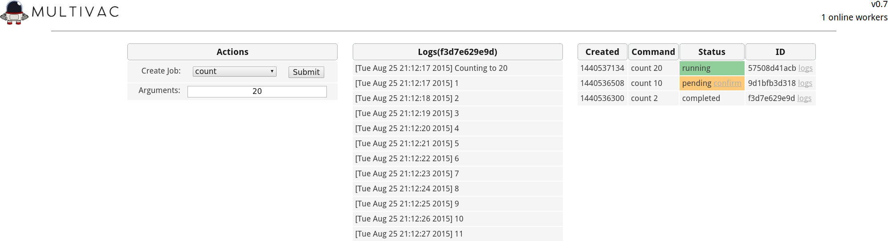

Documentation
This describes the components and design of Multivac. You can use the Quickstart to deploy Multivac.
Configuration
All Multivac components are configured via a common YAML configuration file.
Example
#global config
redis: "127.0.0.1:6379"
actions:
- name: echo
cmd: /bin/echo
confirm_required: True
#slackbot config
slack_token: 1234
#api config
api_listen_port: 8000
Variables
- redis: "host:port" of the common redis instance
- actions: A list of configured actions to be used in the creation of jobs
- name: This serves as the command name to create the job via Slack message or API
- cmd: Path of the command or script to execute
- confirm_required: If True, a secondary confirmation will be required before the command is run
- slack_token: Slack token used to connect to the Slack RTM API
- api_listen_port: Port for which the API and web interface will listen
CLI
After installing Multivac, components can be launched with the cli utility:
Usage
multivac [-h] [-c CONFIG_PATH] [-d] {worker,slackbot,api,console}
multivac v0.7
positional arguments:
{worker,slackbot,api,console}
optional arguments:
-h, --help show this help message and exit
-c CONFIG_PATH path to config file (default: /etc/multivac.yml)
-d enable debug output
WebUI
The web interface provides a real-time view into jobs and their respective logs. It also provides a method of creating jobs outside of your chat service
API
The web API provides functionality to the WebUI and a way to further extend Multivac.
Full documentation can be found here.
ChatBot
ChatBot is the base for communicating with Multivac via chat services, such as Slack
Full documentation can be found here.
BuiltIn Commands
- jobs
- logs
- help
- workers
- confirm
Returns all, pending, completed, or ready jobs
Returns logs for a given job ID
Returns a list of all builtin commands and configured action commands
Returns currently registered worker processes by name and hostname
Confirms a pending job, given a job ID
Action Commands
Action commands are configured commands added to Multivac. They can be a added by providing a path to a script or executable in your config file
Worker
The Multivac worker is where jobs are performed, streaming and storing their results back to be read via the API or ChatBot